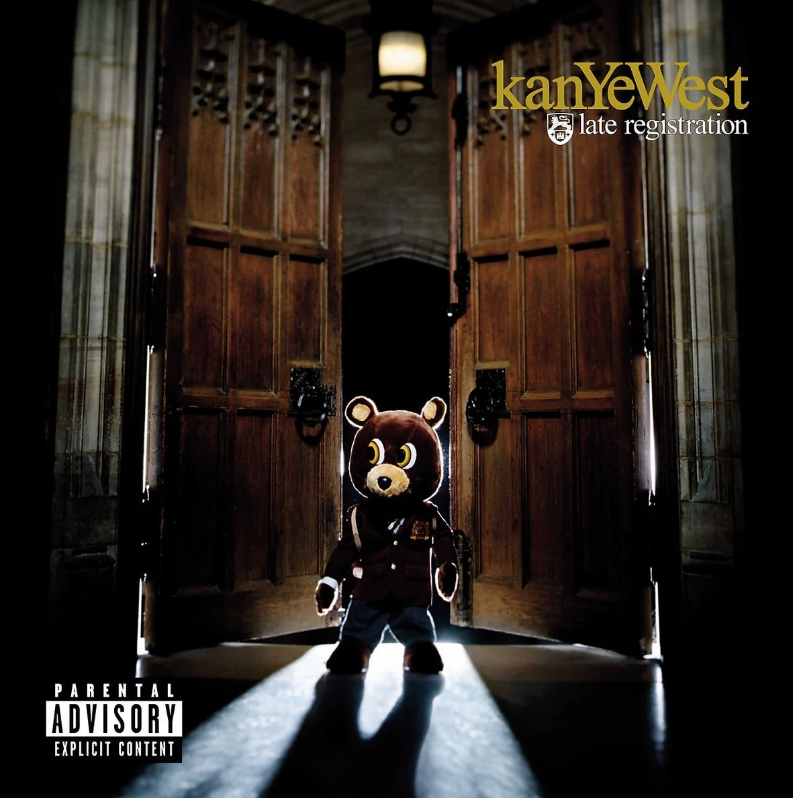

Before talking about Late Registration, I think it is important to acknowledge current controversies surrounding the artist Kanye West. My appreciation of this album is purely based on the musical talent on display on this project, and not an endorsement of the harmful beliefs that he has expressed in recent years.
Late Registration stands as the second installment in his celebrated college trilogy, arriving in August 2005 as the highly anticipated follow up to his debut album The College Dropout. On this album, Kanye enlisted composer Jon Brion to create lush string arrangements that give the album a cinematic feel. He tackled systemic issues like poverty, the crack epidemic's generational toll, and issues with the American healthcare system. Among the emotionally powerful tracks, none land harder than "Hey Mama", a love letter to his mother, Donda West.
My personal favorites are Touch the Sky, Drive Slow and Diamonds From Sierra Leone.